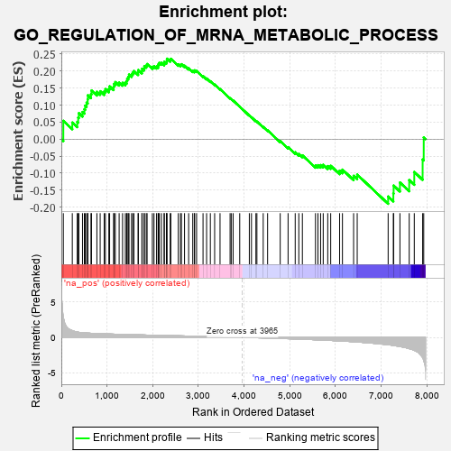
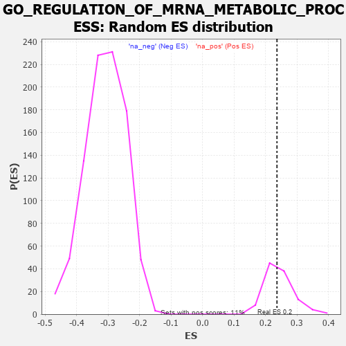

| | | Dataset | 7d |
| Phenotype | NoPhenotypeAvailable |
| Upregulated in class | na_pos |
| GeneSet | GO_REGULATION_OF_MRNA_METABOLIC_PROCESS |
| Enrichment Score (ES) | 0.23647615 |
| Normalized Enrichment Score (NES) | 0.9715066 |
| Nominal p-value | 0.51376146 |
| FDR q-value | 0.7599336 |
| FWER p-Value | 1.0 |
Table: GSEA Results Summary

Fig 1: Enrichment plot: GO_REGULATION_OF_MRNA_METABOLIC_PROCESS
Profile of the Running ES Score & Positions of GeneSet Members on the Rank Ordered List
| PROBE | GENE SYMBOL | GENE_TITLE | RANK IN GENE LIST | RANK METRIC SCORE | RUNNING ES | CORE ENRICHMENT | | 1 | PCBP4 | | | 44 | 2.875 | 0.0539 | Yes |
| 2 | SRSF9 | | | 240 | 0.950 | 0.0487 | Yes |
| 3 | CNOT7 | | | 348 | 0.750 | 0.0507 | Yes |
| 4 | LARP7 | | | 369 | 0.731 | 0.0632 | Yes |
| 5 | AXIN2 | | | 383 | 0.713 | 0.0763 | Yes |
| 6 | LEO1 | | | 463 | 0.655 | 0.0798 | Yes |
| 7 | MYOD1 | | | 504 | 0.628 | 0.0877 | Yes |
| 8 | SF3B4 | | | 521 | 0.622 | 0.0986 | Yes |
| 9 | JMJD6 | | | 553 | 0.613 | 0.1073 | Yes |
| 10 | APEX1 | | | 577 | 0.604 | 0.1169 | Yes |
| 11 | CCNB1 | | | 581 | 0.601 | 0.1289 | Yes |
| 12 | RBM4 | | | 649 | 0.576 | 0.1323 | Yes |
| 13 | PARN | | | 660 | 0.572 | 0.1429 | Yes |
| 14 | CPSF6 | | | 778 | 0.538 | 0.1391 | Yes |
| 15 | SAP18 | | | 850 | 0.519 | 0.1408 | Yes |
| 16 | CWC22 | | | 938 | 0.498 | 0.1401 | Yes |
| 17 | CTR9 | | | 964 | 0.492 | 0.1471 | Yes |
| 18 | AKT1 | | | 1040 | 0.476 | 0.1474 | Yes |
| 19 | RBM15 | | | 1057 | 0.473 | 0.1551 | Yes |
| 20 | RBM42 | | | 1145 | 0.455 | 0.1535 | Yes |
| 21 | PSMD7 | | | 1152 | 0.454 | 0.1621 | Yes |
| 22 | PSMD2 | | | 1181 | 0.450 | 0.1678 | Yes |
| 23 | CDC73 | | | 1265 | 0.436 | 0.1663 | Yes |
| 24 | SNRPA | | | 1340 | 0.422 | 0.1656 | Yes |
| 25 | NOCT | | | 1402 | 0.409 | 0.1663 | Yes |
| 26 | RBM10 | | | 1430 | 0.404 | 0.1712 | Yes |
| 27 | PTBP1 | | | 1441 | 0.402 | 0.1783 | Yes |
| 28 | U2AF2 | | | 1466 | 0.396 | 0.1834 | Yes |
| 29 | TAF15 | | | 1481 | 0.393 | 0.1898 | Yes |
| 30 | SON | | | 1538 | 0.385 | 0.1906 | Yes |
| 31 | BOLL | | | 1561 | 0.381 | 0.1957 | Yes |
| 32 | PAF1 | | | 1588 | 0.376 | 0.2002 | Yes |
| 33 | SLTM | | | 1681 | 0.360 | 0.1959 | Yes |
| 34 | TNPO1 | | | 1684 | 0.359 | 0.2031 | Yes |
| 35 | PTBP3 | | | 1763 | 0.344 | 0.2003 | Yes |
| 36 | AGO2 | | | 1767 | 0.343 | 0.2070 | Yes |
| 37 | PSMD4 | | | 1811 | 0.335 | 0.2085 | Yes |
| 38 | FMR1 | | | 1816 | 0.334 | 0.2149 | Yes |
| 39 | PSMD6 | | | 1858 | 0.326 | 0.2164 | Yes |
| 40 | DCP1A | | | 1877 | 0.323 | 0.2208 | Yes |
| 41 | MYEF2 | | | 1992 | 0.306 | 0.2126 | Yes |
| 42 | NSRP1 | | | 2028 | 0.301 | 0.2144 | Yes |
| 43 | SART3 | | | 2084 | 0.293 | 0.2135 | Yes |
| 44 | CPSF4 | | | 2118 | 0.288 | 0.2153 | Yes |
| 45 | TRA2A | | | 2125 | 0.287 | 0.2204 | Yes |
| 46 | PSME4 | | | 2143 | 0.285 | 0.2242 | Yes |
| 47 | C1QBP | | | 2189 | 0.278 | 0.2242 | Yes |
| 48 | PSMF1 | | | 2251 | 0.268 | 0.2220 | Yes |
| 49 | SRSF1 | | | 2252 | 0.267 | 0.2275 | Yes |
| 50 | NBAS | | | 2299 | 0.260 | 0.2271 | Yes |
| 51 | REST | | | 2308 | 0.259 | 0.2314 | Yes |
| 52 | SRSF4 | | | 2311 | 0.258 | 0.2365 | Yes |
| 53 | NCBP2 | | | 2383 | 0.248 | 0.2326 | No |
| 54 | RBM19 | | | 2396 | 0.246 | 0.2361 | No |
| 55 | PSMD5 | | | 2560 | 0.218 | 0.2200 | No |
| 56 | PDE12 | | | 2608 | 0.211 | 0.2183 | No |
| 57 | PUM2 | | | 2627 | 0.209 | 0.2204 | No |
| 58 | SRSF3 | | | 2696 | 0.199 | 0.2158 | No |
| 59 | XRN1 | | | 2786 | 0.185 | 0.2084 | No |
| 60 | CIRBP | | | 2876 | 0.170 | 0.2006 | No |
| 61 | RBM5 | | | 2910 | 0.164 | 0.1998 | No |
| 62 | RBM4B | | | 2918 | 0.163 | 0.2023 | No |
| 63 | XPO1 | | | 2960 | 0.156 | 0.2003 | No |
| 64 | SMU1 | | | 3101 | 0.137 | 0.1853 | No |
| 65 | PSMD9 | | | 3179 | 0.125 | 0.1781 | No |
| 66 | NUP98 | | | 3261 | 0.112 | 0.1701 | No |
| 67 | RBM8A | | | 3355 | 0.096 | 0.1603 | No |
| 68 | CNOT1 | | | 3473 | 0.081 | 0.1471 | No |
| 69 | DHX9 | | | 3693 | 0.044 | 0.1202 | No |
| 70 | HSF1 | | | 3718 | 0.039 | 0.1180 | No |
| 71 | SRSF2 | | | 3759 | 0.033 | 0.1135 | No |
| 72 | RBM39 | | | 3904 | 0.010 | 0.0955 | No |
| 73 | MTOR | | | 4114 | -0.025 | 0.0694 | No |
| 74 | DDX17 | | | 4161 | -0.035 | 0.0643 | No |
| 75 | PCID2 | | | 4258 | -0.051 | 0.0532 | No |
| 76 | PSME3 | | | 4280 | -0.056 | 0.0516 | No |
| 77 | PRR5L | | | 4418 | -0.080 | 0.0359 | No |
| 78 | SNW1 | | | 4514 | -0.096 | 0.0258 | No |
| 79 | SRPK2 | | | 4790 | -0.155 | -0.0059 | No |
| 80 | TRA2B | | | 4962 | -0.191 | -0.0237 | No |
| 81 | NOVA2 | | | 5118 | -0.231 | -0.0386 | No |
| 82 | NOVA1 | | | 5197 | -0.247 | -0.0434 | No |
| 83 | CELF4 | | | 5275 | -0.266 | -0.0477 | No |
| 84 | RBM25 | | | 5562 | -0.336 | -0.0771 | No |
| 85 | LARP1 | | | 5616 | -0.349 | -0.0766 | No |
| 86 | PSMD1 | | | 5674 | -0.367 | -0.0763 | No |
| 87 | TIA1 | | | 5731 | -0.386 | -0.0754 | No |
| 88 | CELF5 | | | 5830 | -0.414 | -0.0793 | No |
| 89 | SET | | | 5895 | -0.434 | -0.0784 | No |
| 90 | UBB | | | 6090 | -0.503 | -0.0927 | No |
| 91 | ROCK1 | | | 6152 | -0.520 | -0.0897 | No |
| 92 | PRDX6 | | | 6396 | -0.615 | -0.1078 | No |
| 93 | CELF3 | | | 6475 | -0.651 | -0.1043 | No |
| 94 | DDX5 | | | 7152 | -1.037 | -0.1687 | No |
| 95 | CDK9 | | | 7266 | -1.138 | -0.1596 | No |
| 96 | QKI | | | 7272 | -1.145 | -0.1365 | No |
| 97 | UBC | | | 7410 | -1.274 | -0.1276 | No |
| 98 | IWS1 | | | 7613 | -1.587 | -0.1204 | No |
| 99 | DCP2 | | | 7724 | -1.833 | -0.0965 | No |
| 100 | PSMD3 | | | 7907 | -2.887 | -0.0599 | No |
| 101 | PSMD8 | | | 7931 | -3.286 | 0.0051 | No |
Table: GSEA details [plain text format]

Fig 2: GO_REGULATION_OF_MRNA_METABOLIC_PROCESS: Random ES distribution
Gene set null distribution of ES for GO_REGULATION_OF_MRNA_METABOLIC_PROCESS